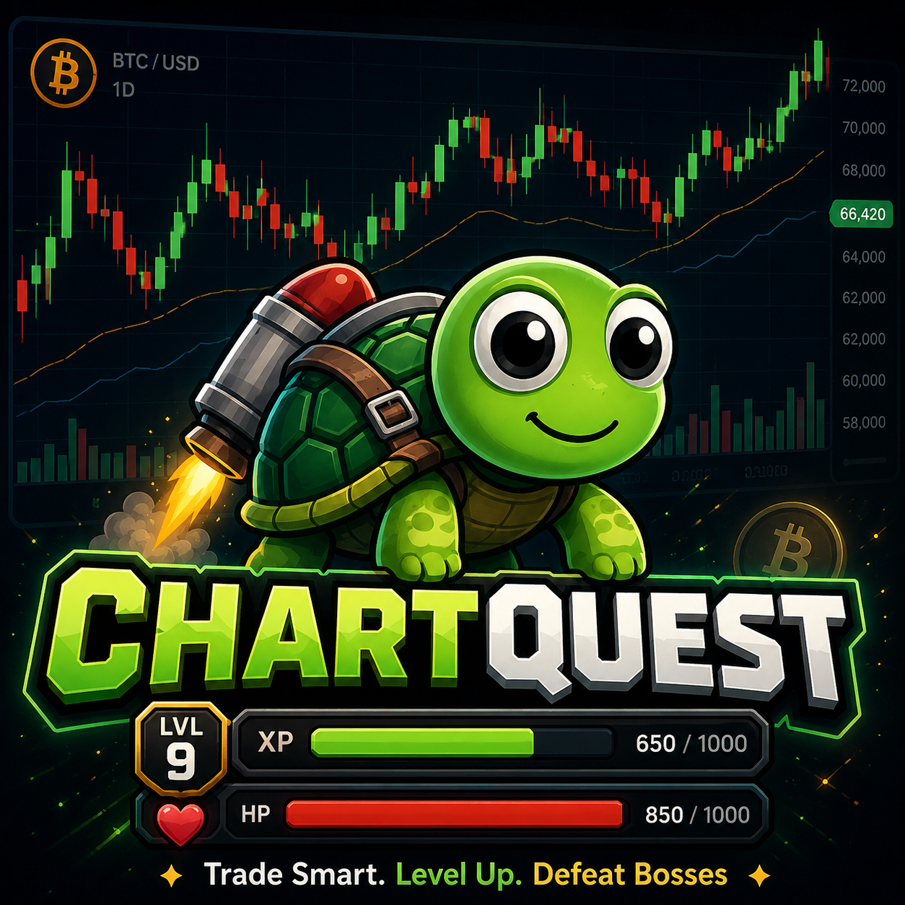

SIGN IN
SIGN UP
Welcome back
Connecting…
SIGN IN
Play as Guest (progress won't save)
👤 SIGN IN
YOUR ACCOUNT
Guest
🌊 DRIFTER
Sign out
Close
⚡ SETUP DETECTED — TAP TO TRADE
✕
TRADE SETUP CHART
TAP ANYWHERE TO CLOSE
TRADE SETUP
📖 CHECK YOUR JOURNAL FIRST
✕
▲ LONG
▼ SHORT
RISK
1.0%
AMOUNT
SHELLS
STOP LOSS
—
TAKE PROFIT
—
LEVERAGE
REWARD : RISK
—
USE RECOMMENDED
CONFIRM TRADE
CONTINUE
📖 JOURNAL
📖 TRADING JOURNAL
CLOSE ✕
📖 TERMS
🎓 LESSONS
📊 TRADES
📝 NOTES
🔥 DAILY DRILL
🔥 DAILY DRILL
CLOSE ✕
🔥 0 day streak
×1.0 Shells
📖 JOURNAL
📈 UP
📉 DOWN